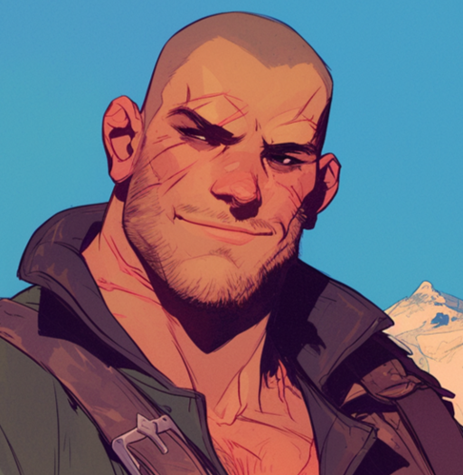

| OLEK |
|

|
| Race: |
Human |
| Age: |
34 |
| Height: |
197cm |
| Faction: |
Northen Marches |
| Ocupation: |
Warrior |
| Connections: |
Wild Roses |
Olek
He’s known as Tiny. A towering figure, built like an ox and as strong as one, Olek was anything but small. But his heart, soft and warm, was a far cry from the rough exterior most assumed him to have. His strength had been exploited for years in his village, where they treated him like little more than a pack mule, his size being both his blessing and his curse.
Brawn, but no brains, they said. Olek was no fool, but he had a simple, trusting nature, often too willing to believe in the good of others. The village used him until they grew tired of him, sending him off on menial tasks that no one else could handle. He never complained.
Life might have continued like that, with Olek doing the heavy lifting for a thankless village, had he not crossed paths with Zeph and Poppy. They saw in him not just a brute force but a man whose kindness could be a weapon, whose simplicity could bring balance to the chaos of the world. When they invited him into the fold of the White Roses, Olek couldn’t help but smile. He had a place now, with people who cared about more than just what his muscles could do.